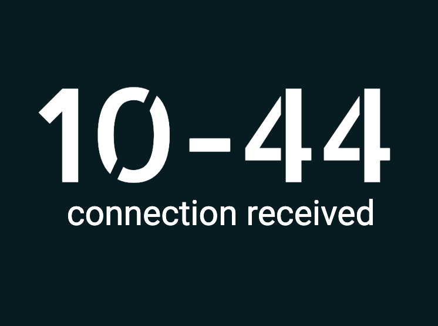

About Me

Hi there!
My name is John D. Watt, but I go by my initials: J.D.
I am a software engineer with a background in psychological research. With my understanding of Javascript and Python, I am comfortable leveraging both back-end (Node.js/Express.js, Django) and front-end (React, HTML, CSS) technologies to drive solutions. Additionally, I thrive in technical ecosystems due to my experience with Agile/Scrum methodologies, collaborating on cross-functional teams, leading coding projects, meeting sprint deadlines, and picking up new technologies quickly.
In addition to my ever-improving tech skills, I am incredibly team-oriented, a fast learner, love jumping head-first into challenges as they arise, and always hold myself to a high standard of excellence. I have excellent time management and organization (I live my life off a whiteboard and habit tracker), I communicate well with both peers and supervisors (as an undergrad, I managed a research lab of 30+ assistants and reported directly to university faculty), and I collaborate well with individuals from diverse backgrounds (I have completed multiple coding projects and worked with cross-functional teams). I am obsessed with self-improvement and optimization, both in code and in life.
When I am not coding, you can often find me reading, meditating, exercising, journaling, playing video games or board games with friends, or listening to music. Some of my more unique passions include lucid dreaming and collecting quotes. I am a huge fan of exploring the mind and pushing the limits of inner experience; always aiming for the next level.
I am always looking for new opportunities for professional and personal growth. If you would like to get in touch, the best way to reach me is via my contact information below. Thank you for stopping by; I look forward to connecting with you in the near future!
My Technical Skills
I have an ever-improving list of web development skills. See below:
- JavaScript
- Python
- HTML
- CSS
- SQL
- Mongoose/MongoDB
- Express.js
- React.js
- Node.js
- jQuery
- Django
- PostgreSQL
- SASS
- Git/GitHub
- Data Structures & Algorithms
Resume
You can view my current resume by clicking HERE.
Summary
John D. Watt
Software engineer with a background in psychological research seeking full-stack web development roles. Comfortable with both back-end (Node.js/Express.js, Django) and front-end (React, HTML, CSS) technologies. Experience with Agile/Scrum methodologies, collaborating on cross-functional teams, leading coding projects, meeting sprint deadlines, and picking up new technologies quickly.
Education
Software Engineering Immersive
2021
General Assembly, Remote
Full-stack software engineering immersive student in an intensive, twelve-week, 450+ hour program focused on product development fundamentals, object-oriented programming, MVC frameworks, data modeling, and team collaboration strategies.
Bachelor of Arts in Psychology
2017 - 2021
University of Nevada, Las Vegas, Las Vegas, NV
Graduated Summa Cum Laude with Research and Creative Honors. Successfully defended an undergraduate honors thesis on meditation's effect on sense of self.
Relevant Professional Experience
Software Engineer
2021 - Present
Freelance, Remote
- Developing web applications for clients using MERN (Mongoose/MongoDB, Express, React, Node) or Python/Django tech stacks.
- Currently in the planning stage for a paid client family-tree document generator.
Software Engineer Fellow
2021 - 2021
General Assembly, Remote
- Full-time software engineering fellow gaining comprehensive, hands-on experience with Javascript, Python, React, Express.js, Node.js, MongoDB, Django, PostgreSQL, HTML, CSS, OOP, and MVCR, through collaborative team projects.
Lab Manager/Research Assistant
2019 - 2021
University of Nevada, Las Vegas, Las Vegas, NV
- Managed 30+ undergraduate research assistants over 3 semesters; organized schedules, distributed weekly agendas, delivered workshops, and chaired 60+ meetings.
- Maintained lab’s Wordpress website for 4 semesters; experience deploying 20+ HTML web pages and debugging code.
- Worked with a team to create 12 assignments for the Jamovi statistical software package, which were published on teachpsychscience.org.
- Mentored and trained 8-12 new lab members each semester on coding in R, Wordpress, Jamovi, and Qualtrics.
- Collaborated on 3 separate poster teams to analyze/code data in R, write up results, and create research presentations that were taken to professional conferences.
Selected Projects
Dreamscribe
A forum for lucid dreamers to journal their dreams and share those dreams with one another. This NEM-stack application was created during a two-week sprint; the app’s mobile-first design is responsive and modern with full CRUD functionality, RESTful routing, microinteractions, and dynamically rendered web pages using EJS.
JavaScript, Node, Express, MongoDB, Mongoose, EJS, SASS, jQuery

Project Wayfarer
A client-requested social media site for travelers to share tips on their favorite park locations. This full-stack django application was created by a three-person team during a one-week sprint. The application demonstrates full CRUD functionality, use of RESTful routes, a responsive mobile-first design, and DTL templating to render dynamic web pages.
Python, Django, SQL, PostgreSQL, Bootstrap CSS, Javascript, jQuery

10-44
Buddy matching app for truckers to help address loneliness during long-haul trips. Created from scratch in under three days by an eight-person, cross-functional team; this hackathon winning app features a robust, session-based user auth system, an efficient matching algorithm that pairs users based on shared interests, and a working two-way messaging system.
JavaScript, Node, Express, MongoDB, Mongoose, EJS, jQuery
